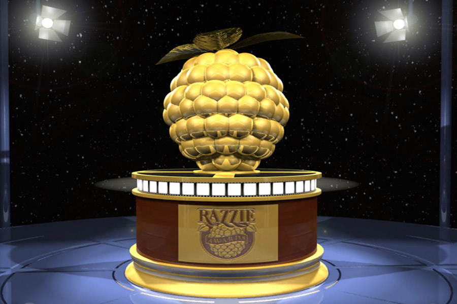

<!DOCTYPE html>
<html lang="es"></html>
<head>
    <meta charset=UTF-8>
    <tittle>Temas a hablar</tittle>
    <head>
 <body>

    <section>

        <header>
            <h1>Cine</h1>
            <header>


                <main>


                    <main>


                        <aside>

                        </aside>


                                <footer>

                                </footer>

                                        <section>


                                            <body>
                                                <html>
    
<article>
    <header>

       <h2>> Discucion de Cine </h2>
       <!--8/11/2021-->
       <h4>8/11/2021</h4>
       <hgroup>
       <header>
        
        <br> 
        ¿Que premios del cine extisten?
<br>
Los premios que premian el cine son varios pero los mas importantes son 3 los Golden Globes que son como los oscares,
Los Golden Razzpies que premian lo peor del año osea lo contrario a los oscares y los demas son practicicamnte los mismo.
Con estos 3 preimios podemos ver cuales fueron las mejores y peores peliulas del año.
<br>
<br>
<div>
    <!-- El Cine es arte y uno de los mas importantes .-->
</div>

<div> <!--Contenido-->

    <h3>
       Top 10 peores peliculas de todos los timpos (Opinion)
    </h3>

    <ol reversed>
        <li>Al filo del mañana </li>
        <li>Batman y Robin</li>
        <li>Screm 3</li>
        <li>LLamada del diablo</li>
        <li>Encanto</li>
        <li>Toy story 4</li>
        <li>The mask</li>
        <li>Badass</li>
        <li>House of Gucci</li>
        <li>Spiderman Far From Home</li>
  </ol>

  <figure>
    
    <figcaption>Arte</figcaption>
</figure>

  <h6>Bibliografia: https://es.wikipedia.org/wiki/Premios_Globo_de_Oro,https://es.wikipedia.org/wiki/Premios_%C3%93scar,https://es.wikipedia.org/wiki/Premios_Golden_Raspberry</h6>
</div>

       <!--Empieza la fecha y el titulo-->

       <article>
        <header>
            <hgroup>
                <h2>Te dejamos otros links por si quieres saber mas</h2>
                
                <h2>13/01/22</h2>

                <h2> </h2>

            </hgroup>
        </header>
        <!--Acaba la fecha y el titulo-->

        <!--Inicia la lista-->

        <div>
            <ul>
                <li><a href=https://fueradefoco.com.mx/critica/>Fuera de Foco.com</a></li>
                <li><a href=https://soydecine.com/>Soy de Cine</a></li> 
                <li><a href=https://casadepelis.com/>Casa de Pelis</a></li>
                <li><a href=http://extraordinerd.com/>extraordinerd</a></li>
                <li><a href=https://www.espinof.com/ranking/peliculas-recomendadas>Espinof</a></li>                       
            </ul>
        </div>

        <!--acaba la lista-->

        <figure>
            <iframe width="560" height="315" src="https://www.youtube.com/watch?v=2zENnAaiB80" title="YouTube video player" frameborder="0" allow="accelerometer; autoplay; clipboard-write; encrypted-media; gyroscope; picture-in-picture" allowfullscreen></iframe>
            <figcaption>
                <p>Me gusto la lista porque yo he visto a varias de estas peliculas y son las mas malas de todos los tiempos,
                 estas en todo tu derecho de decirinos is crees que alguna debio de aparecer o alguna que no te gusto 
                 que apareciara todo claramente con respeto y sin ofender a nadie.</p>
                <p>Esta bien todos los Opiniones</p>                              
            </figcaption>
            </figure>

        <p>Muchas Gracias por visitarnos, ojala te volvamos a ver aqui, tenemos de todo</p>

    </article>

</main>

<article>
    <main>
        <div>
            <header>
                <h1>Premios Golden Raspberry</h1>
            </header>

            <p>Los galardones que homenajean a las peores películas del año incluyen a Jared Leto,
             Amy Adams o Ben Affleck entre sus nominados. Los Razzie, como popularmente se conocen los antipremios de la industria del cine, han anunciado hoy sus nominaciones para este año. es muy
               tranquilo. 
            </p>

            <p>
                La gran novedad de esta 42a edición es la creación de la categoría "Peor interpretación de Bruce Willis en una película de 2021", debido a la participación del actor en ocho filmes duramente criticados.
                La cinta con más nominaciones es 'Lady Di: El musical', una producción de Netflix que opta a ganar el Golden Raspberry en nueve categorías.
                'Infinite', 'Karen', 'Space Jam: Nuevas leyendas' y 'La mujer en la ventana'
                 son los otros largometrajes que compiten para la "Peor película" de 2021 de estos anti-Oscars.
              
            </p>

            <p>
                En la lista de nominados aparecen actores tan populares como Jared Leto, por su papel en 'La casa de Gucci', Ben Affleck por 'El último duelo' o Amy Adams por sus interpretaciones en 'La mujer de la ventana' y 'Querido Evan Hansen'.
                 Megan Fox y Mel Gibson también son candidatos a recibir un galardón por su trabajo en 'Midnight in the Switchgrass' e 'Instinto peligroso', respectivamente.
            </p>
        </div>
    <div>
        <header>
            <h1>Premios Globo de Oro</h1>
        </header>    
            <p>
                Los Premios Globo de Oro —en inglés: Golden Globe Awards— son galardones concedidos por los 93 miembros de la Asociación
                 de la Prensa Extranjera de Hollywood en reconocimiento a la excelencia de profesionales en cine y televisión,
                 tanto en los Estados Unidos como a nivel mundial.
            </p>
            Los Premios Globo de Oro —en inglés: Golden Globe Awards— son galardones concedidos por los 93 miembros de la Asociación de la Prensa Extranjera de Hollywood 
            (HFPA; por sus siglas en inglés) en reconocimiento a la excelencia de profesionales en cine y televisión, tanto en los Estados Unidos como a nivel mundial. La ceremonia anual, en la cual los ganadores son premiados, forma parte de la temporada de premios cinematográficos, cuyo inicio tiene lugar entre octubre o noviembre del año anterior, para finalizar entre febrero o marzo con la ceremonia de entrega de los Premios Óscar.1​

            La primera ceremonia de premiación tuvo lugar en enero de 1944 en los estudios de 20th Century-Fox en Los Ángeles. La 77.ª ceremonia —la más reciente— tuvo lugar el 5 de enero de 2020 en el hotel Beverly Hilton en Beverly Hills, sede de la ceremonia desde 1961.2​
            <p>

            </p>

            <p>
                En 1943, un grupo de escritores se unieron para formar la Asociación de la Prensa Extranjera de Hollywood, y a su vez, para crear su propio galardón, el Globo de Oro, el cual juega un papel fundamental en el mercado cinematográfico en la actualidad.3​ La primera ceremonia de estos premios,
                 tuvo lugar en 1944 en los estudios de 20th Century-Fox y reconoció los logros de dicha industria producidos en 1943
            </p>
        </div>
        <div>
            <header>
                Opiniones Generales de los Golden Globes
            </header>

            <p>
                Normalmente los Golden Globes son los que abren el paso a los oscares y casi siempre el que gana el globo de oro gana el oscar.
            </p>

            <p>

            </p>

            <p>

            </p>

        </div>  
    </main>
</article>

    <aside>
        
    </aside>

    <footer>
        <div>
            <span>Santiago Rivera Espinosa</span> <a href="https://www.instagram.com/santi_rivera_espinosa/" target="_blank">@santi_rivera_espinosa en instagram</a>
        </div>

        <blockquote>
            <p>("https://es.wikipedia.org/wiki/Premios_Globo_de_Oro", 8º párrafo), </p>
        </blockquote>

        <div><span>Santiago Rivera Espinosa</span></div>
        <div><span>Blog creado en nombre del<i>Colegio Alamos</i></span><span>Las opiniones contenidas en este proyecto pertenecen a los autores de cada entrada.</span></div>
        <div><span>Francisco Espinosa</span></div>

    </footer>

</article>
<footer>


</footer>
 